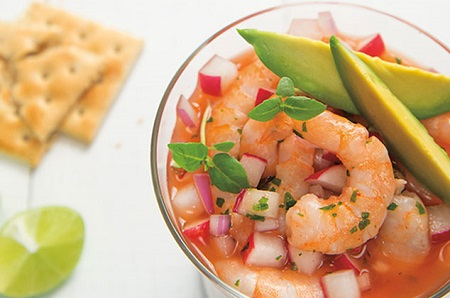

El mejor sabor del mar con la calidad que mereces...

Somos un restaurante dedicado a deleitar los paladares de los amantes de los mariscos y a encaminar a un mundo nuevo a las personas que no tienen una buena experciencia con este tipo de comida para que le den una nueva oportunidad a la comida del mar. Te invitamos a tener una nueva experiencia con un menú como ninguno, toda nuestra comida tiene ese toque casero que a todos nos encanta porque no cocinamos para vender, cocinamos para complacer.
Tenemos la capacidad de atender a más de 80 personas en nuestro establecimiento con rapidez y eficacia en la calidad de nuestros alimentos, a demás de atender nuestro servicio a domicilio con una rapidez cómo ninguna.

La calidad de nuestros productos no es lo único que nos distingue, tenemos el orgullo de decirte que nuestros meseros y cocineros también son parte fundamental para que tu experiencia en nuestro resturante sea inolvidable, esto debido a que siempre te atendemos con la mejor actitud y con el compromiso de que tu única preocupación sea el de dejar nuestros platos vacíos sin tener que lidiar con alguna situación incomoda.
Te invitamos a que revises nuestro menú para que confirmes que somos lo que estás buscando, si de plano lo tuyo no son los mariscos no te vayas aún, te hacemos la misma invitación para que veas que puedes encontrar algo de tu agrado.
Y recuerda... No cocinamos para vender, cocinamos para complacer.